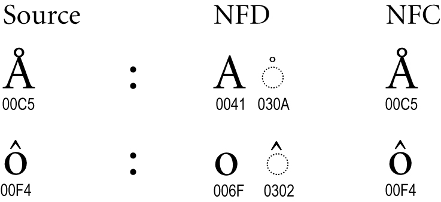
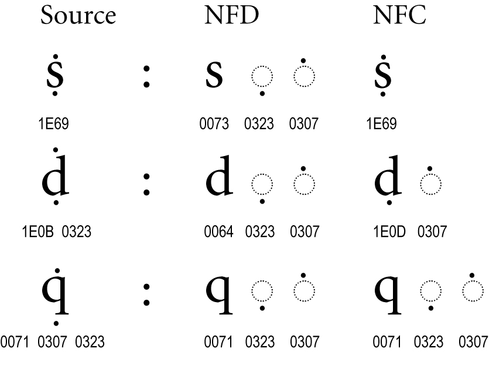
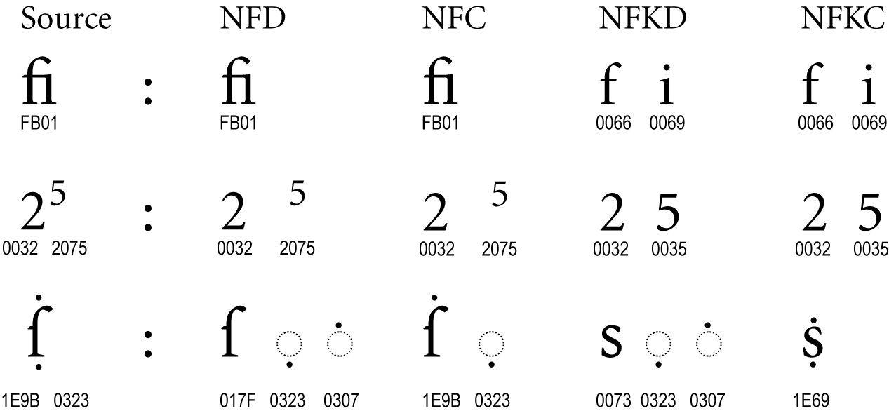
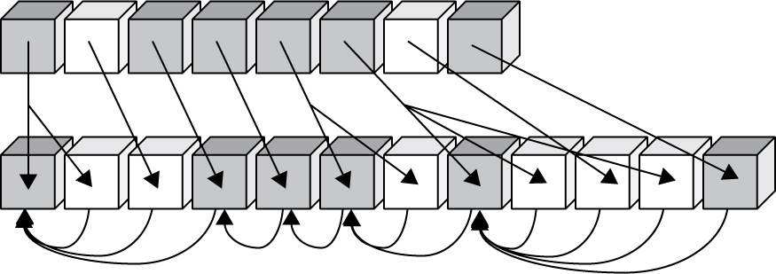

Unicode Standard Annex #15
Unicode Normalization Forms
| Version | Unicode 5.2.0 |
| Authors | Mark Davis (markdavis@google.com), Ken Whistler(ken@unicode.org), Martin Dürst |
| Date | 2009-09-03 |
| This Version | http://www.unicode.org/reports/tr15/tr15-31.html |
| Previous Version | http://www.unicode.org/reports/tr15/tr15-29.html |
| Latest Version | http://www.unicode.org/reports/tr15/ |
| Latest Proposed Update | http://www.unicode.org/reports/tr15/proposed.html |
| Revision | 31 |
Summary
This annex describes normalization forms for Unicode text. When implementations keep strings in a normalized form, they can be assured that equivalent strings have a unique binary representation. This annex also provides examples, additional specifications regarding normalization of Unicode text, and information about conformance testing for Unicode normalization forms.
Status
This document has been reviewed by Unicode members and other interested parties, and has been approved for publication by the Unicode Consortium. This is a stable document and may be used as reference material or cited as a normative reference by other specifications.
A Unicode Standard Annex (UAX) forms an integral part of the Unicode Standard, but is published online as a separate document. The Unicode Standard may require conformance to normative content in a Unicode Standard Annex, if so specified in the Conformance chapter of that version of the Unicode Standard. The version number of a UAX document corresponds to the version of the Unicode Standard of which it forms a part.
Please submit corrigenda and other comments with the online reporting form [Feedback]. Related information that is useful in understanding this annex is found in Unicode Standard Annex #41, “Common References for Unicode Standard Annexes.” For the latest version of the Unicode Standard, see [Unicode]. For a list of current Unicode Technical Reports, see [Reports]. For more information about versions of the Unicode Standard, see [Versions]. For any errata which may apply to this annex, see [Errata].
Contents
- 1 Introduction
- 2 Notation
- 3 Versioning and Stability
- 4 Conformance
- 5 Specification
- 6 Composition Exclusion Table
- 7 Examples and Charts
- 8 Design Goals
- 9 Implementation Notes
- 10 Decomposition
- 11 Code Sample
- 12 Legacy Encodings
- 13 Programming Language Identifiers
- 14 Detecting Normalization Forms
- 14.1 Stable Code Points
- 15 Conformance Testing
- 16 Hangul
- 17 Intellectual Property
- 18 Respecting Canonical Equivalence
- 19 Stability Prior to Unicode 4.1
- 20 Stabilized Strings
- 21 Stream-Safe Text Format
- Acknowledgments
- References
- Modifications
1 Introduction
This annex provides subsidiary information about Unicode normalization. It describes canonical and compatibility equivalence and the four normalization forms, providing examples, and elaborates on the formal specification of Unicode normalization, with further explanations and implementation notes.
This document also provides the formal specification of the Stream-Safe Text Format and of the Normalization Process for Stabilized Strings.
For the formal specification of the Unicode Normalization Algorithm, see Section 3.11, "Normalization Forms" of [Unicode].
For a general introduction to the topic of equivalent sequences for Unicode strings and the need for normalization, see Section 2.12, "Equivalent Sequences and Normalization" of [Unicode].
1.1 Canonical and Compatibility Equivalence
The Unicode Standard defines two equivalences between characters: canonical equivalence and compatibility equivalence. Canonical equivalence is a fundamental equivalency between characters or sequences of characters that represent the same abstract character, and when correctly displayed should always have the same visual appearance and behavior. Figure 1 illustrates this equivalence.
Figure 1. Canonical Equivalence
| Combining sequence | Ç | ↔ | C ◌̧ |
| Ordering of combining marks | q+ ̇+ ̣ | ↔ | q + ̣+ ̇ |
| Hangul | 가 | ↔ | ᄀ +ᅡ |
| Singleton | Ω | ↔ | Ω |
Compatibility equivalence is a weaker equivalence between characters or sequences of characters that represent the same abstract character, but may have a different visual appearance or behavior. The visual representations of the variant characters are typically a subset of the possible visual representations of the nominal character, but represent visual distinctions that may be significant in some contexts but not in others, requiring greater care in the application of this equivalence. If the visual distinction is stylistic, then markup or styling could be used to represent the formatting information. However, some characters with compatibility decompositions are used in mathematical notation to represent a distinction of a semantic nature; replacing the use of distinct character codes by formatting may cause problems. Figure 2 illustrates this equivalence.
Figure 2. Compatibility Equivalence
| Font variants | ℌ | ℍ | ||
| Breaking differences | - | |||
| Cursive forms | ﻨ | ﻧ | ﻦ | ﻥ |
| Circled | ① | |||
| Width, size, rotated | ｶ | カ | ︷ | { |
| Superscripts/subscripts | ⁹ | ₉ | ||
| Squared characters | ㌀ | |||
| Fractions | ¼ | |||
| Others | dž | |||
Both canonical and compatibility equivalences are explained in more detail in Chapter 2, General Structure, and Chapter 3, Conformance, of The Unicode Standard in [Unicode].
1.2 Normalization Forms
Unicode Normalization Forms are formally defined normalizations of Unicode strings which make it possible to determine whether any two Unicode strings are equivalent to each other. Depending on the particular Unicode Normalization Form, that equivalence can either be a canonical equivalence or a compatibility equivalence.
Essentially, the Unicode Normalization Algorithm puts all combining marks in a specified order, and uses rules for decomposition and composition to transform each string into one of the Unicode Normalization Forms. A binary comparison of the transformed strings will then determine equivalence.
The four Unicode Normalization Forms are summarized in Table 1.
| Title | Description |
|---|---|
| Normalization Form D (NFD) | Canonical Decomposition |
| Normalization Form C (NFC) | Canonical Decomposition, followed by Canonical Composition |
| Normalization Form KD (NFKD) | Compatibility Decomposition |
| Normalization Form KC (NFKC) | Compatibility Decomposition, followed by Canonical Composition |
There are two forms of normalization that convert to composite characters: Normalization Form C and Normalization Form KC. The difference between these depends on whether the resulting text is to be a canonical equivalent to the original unnormalized text or a compatibility equivalent to the original unnormalized text. (In NFKC and NFKD, a K is used to stand for compatibility to avoid confusion with the C standing for composition.) Both types of normalization can be useful in different circumstances.
Figures 3 through 6 illustrate different ways in which source text can be normalized. In the first three figures, the NFKD form is always the same as the NFD form, and the NFKC form is always the same as the NFC form, so for simplicity those columns are omitted. For consistency, all of these examples use Latin characters, although similar examples are found in other scripts.


Certain characters are known as singletons. They never remain in the text after normalization. Examples include the angstrom and ohm symbols, which map to their normal letter counterparts a-with-ring and omega, respectively.
Figure 4. Canonical Composites


Many characters are known as canonical composites, or precomposed characters. In the D forms, they are decomposed; in the C forms, they are usually precomposed. (For exceptions, see Section 6, Composition Exclusion Table.)
Normalization provides a unique order for combining marks, with a uniform order for all D and C forms. Even when there is no precomposed character, as with the “q” with accents in Figure 5, the ordering may be modified by normalization.
Figure 5. Multiple Combining Marks

The example of the letter “d” with accents shows a situation where a precomposed character plus another accent changes in NF(K)C to a different precomposed character plus a different accent.
Figure 6. Compatibility Composites


In the NFKC and NFKD forms, many formatting distinctions are removed, as shown in Figure 6. The “fi” ligature changes into its components “f” and “i”, the superscript formatting is removed from the “5”, and the long “s” is changed into a normal “s”.
Normalization Form KC does not attempt to map character sequences to compatibility composites. For example, a compatibility composition of “office” does not produce “o\uFB03ce”, even though “\uFB03” is a character that is the compatibility equivalent of the sequence of three characters “ffi”. In other words, the composition phase of NFC and NFKC are the same—only their decomposition phase differs, with NFKC applying compatibility decompositions.
Normalization Form C uses canonical composite characters where possible, and maintains the distinction between characters that are compatibility equivalents. Typical strings of composite accented Unicode characters are already in Normalization Form C. Implementations of Unicode that restrict themselves to a repertoire containing no combining marks are already typically using Normalization Form C. (Implementations need to be aware of versioning issues—see Section 3, Versioning and Stability.)
The W3C Character Model for the World Wide Web, Part II: Normalization [CharNorm] and other W3C Specifications (such as XML 1.0 5th Edition) recommend using Normalization Form C for all content, because this form avoids potential interoperability problems arising from the use of canonically equivalent, yet different, character sequences in document formats on the Web. See the W3C Requirements for String Identity, Matching, and String Indexing [CharReq] for more background.
Normalization Form KC additionally folds the differences between compatibility-equivalent characters that are inappropriately distinguished in many circumstances. For example, the halfwidth and fullwidth katakana characters will normalize to the same strings, as will Roman numerals and their letter equivalents. More complete examples are provided in Section 7, Examples and Charts.
Normalization Forms KC and KD must not be blindly applied to arbitrary text. Because they erase many formatting distinctions, they will prevent round-trip conversion to and from many legacy character sets, and unless supplanted by formatting markup, they may remove distinctions that are important to the semantics of the text. It is best to think of these Normalization Forms as being like uppercase or lowercase mappings: useful in certain contexts for identifying core meanings, but also performing modifications to the text that may not always be appropriate. They can be applied more freely to domains with restricted character sets. (See Unicode Standard Annex #31, "Unicode Identifier and Pattern Syntax" [UAX31] for examples.)
To summarize the treatment of compatibility composites that were in the source text:
- Both NFD and NFC maintain compatibility composites.
- Neither NFKD nor NFKC maintains compatibility composites.
- None of the forms generate compatibility composites that were not in the source text.
For a list of all characters that may change in any of the Normalization Forms (aside from reordering), see Normalization Charts [Charts].
1.3 Description of the Normalization Process
This section provides a short summary of how the Unicode Normalization Algorithm works.
To transform a Unicode string into a given Unicode Normalization Form, the first step is to fully decompose the string. The decomposition process makes use of the Decomposition_Mapping property values defined in UnicodeData.txt. There are also special rules to fully decompose Hangul syllables. Full decomposition involves recursive application of the Decomposition_Mapping values, because in some cases a complex composite character may have a Decomposition_Mapping into a sequence of characters, one of which may also have its own non-trivial Decomposition_Mapping value.
The type of full decomposition chosen depends on which Unicode Normalization Form is involved. For NFC or NFD, one does a full canonical decomposition, which makes use of only canonical Decomposition_Mapping values. For NFKC or NFKD, one does a full compatibility decomposition, which makes use of canonical and compatibility Decomposition_Mapping values.
Once a string has been fully decomposed, any sequences of combining marks that it contains are put into a well-defined order. This rearrangement of combining marks is done according to a subpart of the Unicode Normalization Algorithm known as the Canonical Ordering Algorithm. That algorithm sorts sequences of combining marks based on the value of their Canonical_Combining_Class (ccc) property, whose values are also defined in UnicodeData.txt. Most characters (including all non-combining marks) have a Canonical_Combining_Class value of zero, and are unaffected by the Canonical Ordering Algorithm. Such characters are referred to by a special term, starter. Only the subset of combining marks which have non-zero Canonical_Combining_Class property values are subject to potential reordering by the Canonical Ordering Algorithm. Those characters are called non-starters.
At this point, if one is transforming a Unicode string to NFD or NFKD, the process is complete. However, one additional step is needed to transform the string to NFC or NFKC: recomposition. The fully decomposed and canonically ordered string is processed by another subpart of the Unicode Normalization Algorithm known as the Canonical Composition Algorithm. That process logically starts at the front of the string and systematically checks it for pairs of characters which meet certain criteria and for which there is a canonically equivalent composite character in the standard. Each appropriate pair of characters which meet the criteria is replaced by the composite character, until the string contains no further such pairs. This transforms the fully decomposed string into its most fully composed but still canonically equivalent sequence.
Figure 7 shows a sample of how the composition process works. The gray cubes represent starters, and the white cubes represent non-starters. In the first step, the string is fully decomposed and canonically reordered. This is represented by the downwards arrows. In the second step, each character is checked against the last non-starter and starter, and combined if all the appropriate conditions are met. This is represented by the curved arrows pointing to the starters. Note that in each case, all of the successive white boxes (non-starters) are examined plus one additional gray box (starter). Examples are provided in Section 7, Examples and Charts, and a code sample is provided in Section 11, Code Sample.


Taken step-by-step, the Unicode Normalization Algorithm is fairly complex. However, it is designed in such a way that it enables very efficient, highly-optimized implementations. For example, checking whether a Unicode string is in NFC is a very quick process, and since much text is already in NFC, an implementation that normalizes strings to NFC mostly consists of quick verification checks, with only very occasional modifications of any pieces which are not already in NFC. See Section 14, Detecting Normalization Forms.
Note: Text exclusively containing ASCII characters (U+0000..U+007F) is left unaffected by all of the Normalization Forms. This is particularly important for programming languages. (See Unicode Standard Annex #31, "Unicode Identifier and Pattern Syntax" [UAX31].) Text exclusively containing Latin-1 characters (U+0000..U+00FF) is left unaffected by NFC. This is effectively the same as saying that all Latin-1 text is already normalized to NFC.
The complete formal specification of the Unicode Normalization Algorithm and of the Unicode Normalization Forms can be found in Section 3.11, "Normalization Forms" of [Unicode]. See that section for all of the formal definitions and for the details of the exact formulation of each step in the algorithm.
1.4 Concatenationof Normalized Strings
In using normalization functions, it is important to realize that none of the Normalization Forms are closed under string concatenation. That is, even if two strings X and Y are normalized, their string concatenation X+Y is not guaranteed to be normalized. This even happens in NFD, because accents are canonically ordered, and may rearrange around the point where the strings are joined. Consider the string concatenation examples shown in Table 2.
| Form | String1 | String2 | Concatenation | Correct Normalization |
|---|---|---|---|---|
| NFD | a ^ | . (dot under) | a ^ . | a . ^ |
| NFC | a | ^ | a ^ | â |
| NFC | ᄀ | ᅡ ᆨ | ᄀ ᅡ ᆨ | 각 |
However, it is possible to produce an optimized function that concatenates two normalized strings and does guarantee that the result is normalized. Internally, it only needs to normalize characters around the boundary of where the original strings were joined, within stable code points. For more information, see Section 14.1, Stable Code Points.
In contrast to their behavior under string concatenation, all of the Normalization Forms are closed under substringing. For example, given a substring of a normalized string X, from offsets 5 to 10, the resulting string will still be normalized.
2 Notation
Table 3 lists examples of the notational conventions used in this annex.
| Example Notation | Description |
|---|---|
| "...\uXXXX..." | The Unicode character U+XXXX embedded within a string |
| ki, am, and kf | Conjoining jamo types (initial, medial, final) represented by subscripts |
| "c¸" | c followed by a nonspacing cedilla: spacing accents (without a dotted circle) may be used to represent nonspacing accents |
| NFx | Any Unicode Normalization Form: NFD, NFKD, NFC, or NFKC |
| toNFx(s) | A function that produces the the normalized form of a string s according to the definition of Unicode Normalization Form X. |
| isNFx(s) |
A binary property of a string s, whereby:
See also Section 14, Detecting Normalization Forms. |
| X ≈ Y | X is canonically equivalent to Y |
| X[a, b] | The substring of X that includes all code units after offset a and before offset b; for example, if X is “abc”, then X[1,2] is “b” |
Additional conventions used in this annex:
- A sequence of characters may be represented by using plus signs between the character names or by using string notation.
- An offset into a Unicode string is a number from 0 to n-1, where n is the length of the string and indicates a position that is logically between Unicode code units (or at the very front or end in the case of 0 or n-1, respectively).
- Unicode names may be shortened, as shown in Table 4.
Table 4. Character Abbreviation
| Abbreviation | Full Unicode Name |
|---|---|
| E-grave | LATIN CAPITAL LETTER E WITH GRAVE |
| ka | KATAKANA LETTER KA |
| hw_ka | HALFWIDTH KATAKANA LETTER KA |
| ten | COMBINING KATAKANA-HIRAGANA VOICED SOUND MARK |
| hw_ten | HALFWIDTH KATAKANA VOICED SOUND MARK |
3 Versioning and Stability
It is crucial that Normalization Forms remain stable over time. That is, if a string that does not have any unassigned characters is normalized under one version of Unicode, it must remain normalized under all future versions of Unicode. This is the backward compatibility requirement. To meet this requirement, a fixed version for the composition process is specified, called the composition version. The composition version is defined to be Version 3.1.0 of the Unicode Character Database. For more information, see
- Versions of the Unicode Standard [Versions]
- Unicode 3.1 [Unicode3.1]
- Unicode Character Database [UCD]
To see what difference the composition version makes, suppose that a future version of Unicode were to add the composite Q-caron. For an implementation that uses that future version of Unicode, strings in Normalization Form C or KC would continue to contain the sequence Q + caron, and not the new character Q-caron, because a canonical composition for Q-caron was not defined in the composition version. See Section 6, Composition Exclusion Table, for more information.
It would be possible to add more compositions in a future version of Unicode, as long as the backward compatibility requirement is met. It requires that for any new composition XY → Z, at most one of X or Y was defined in a previous version of Unicode. That is, Z must be a new character, and either X or Y must be a new character. However, the Unicode Consortium strongly discourages new compositions, even in such restricted cases.
In addition to fixing the composition version, future versions of Unicode must be restricted in terms of the kinds of changes that can be made to character properties. Because of this, the Unicode Consortium has a clear policy to guarantee the stability of Normalization Forms.
The Unicode Consortium has well-defined policies in place to govern changes that affect backward compatibility. According to the Unicode policy for Normalization Forms, applicable to Unicode 4.1 and all later versions, the results of normalizing a string on one version will always be the same as normalizing it on any other version, as long as the string contains only assigned characters according to both versions. For information on these stability policies, especially regarding normalization, see Unicode Policies [Policies].
If an implementation normalizes a string that contains characters that are not assigned in the version of Unicode that it supports, that string might not be in normalized form according to a future version of Unicode. For example, suppose that a Unicode 5.0 program normalizes a string that contains new Unicode 5.1 characters. That string might not be normalized according to Unicode 5.1.
Prior to Unicode 4.1, the stability policy was not quite as strict. For more information, see Section 19 Stability Prior to Unicode 4.1.
4 Conformance
Starting with Unicode 5.2.0, conformance clauses UAX15-C1 and UAX15-C2 have been redirected to point to the formal specification of Unicode Normalization Forms in Section 3.11, "Normalization Forms" of [Unicode]. All of the local clauses have been retained in this annex, so that any external references to Unicode Standard Annex #15 and to particular conformance clauses for Unicode Normalization Forms will continue to be valid.
UAX15-C1. A process that produces Unicode text that purports to be in a Normalization Form shall do so in accordance with the specifications in Section 3.11, "Normalization Forms" of [Unicode].
- See C13 in Chapter 3, Conformance, of [Unicode]
UAX15-C2. A process that tests Unicode text to determine whether it is in a Normalization Form shall do so in accordance with the specifications in Section 3.11, "Normalization Forms" of [Unicode]
- See C14 in Chapter 3, Conformance, of [Unicode]
UAX15-C3. A process that purports to transform text into a Normalization Form must be able to produce the results of the conformance test specified in Section 15, Conformance Testing.
- See C15 in Chapter 3, Conformance, of [Unicode]
UAX15-C4. A process that purports to transform text according to the Stream-Safe Text Format must do so in accordance with the specifications in this annex.
UAX15-C5. A process that purports to transform text according to the Normalization Process for Stabilized Strings must do so in accordance with the specifications in this annex.
The specifications for Normalization Forms are written in terms of a process for producing a decomposition or composition from an arbitrary Unicode string. This is a logical description—particular implementations can have more efficient mechanisms as long as they produce the same result. See C18 in Chapter 3, Conformance, of [Unicode] and the notes following. Similarly, testing for a particular Normalization Form does not require applying the process of normalization, so long as the result of the test is equivalent to applying normalization and then testing for binary identity.
5 Specification
Starting with Unicode 5.2.0, the full formal specification for Unicode Normalization Forms is located in Section 3.11, "Normalization Forms" of [Unicode]. Specific references to any definitions used by the Unicode Normalization Algorithm remain valid. See Section 3.11, "Normalization Forms" of [Unicode] for full details. Only the specification of the Normalization Process for Stabilized Strings is retained in this section.
R3. Normalization Process for Stabilized Strings
The Normalization Process for Stabilized Strings for a given normalization form (NFD, NFC, NFKD, or NFKC) is the same as the corresponding process for generating that form, except that:
- The process must be aborted with an error if the string contains any code point with the property value General_Category=Unassigned, according to the version of Unicode used for the normalization process.
6 Composition Exclusion Table
There are four classes of characters that are excluded from composition:
- Script-specifics: precomposed characters that are generally not the preferred form
for particular scripts.
- These cannot be computed from information in the Unicode Character Database.
- An example is U+0958 (क़) DEVANAGARI LETTER QA.
- Post composition version: precomposed characters that are added after Unicode 3.0
[Unicode3.0] and whose decompositions
exist in prior versions of Unicode. This set will be updated with each subsequent version of Unicode. For more
information, see Section 3, Versioning and
Stability.
- These cannot be computed from information in the Unicode Character Database.
- An example is U+2ADC (⫝̸) FORKING.
- Singletons: characters having decompositions that consist of single characters (as
described below).
- These are computed from information in the Unicode Character Database.
- An example is U+2126 (Ω) OHM SIGN.
- Non-starter decompositions: precomposed characters whose decompositions start with a
non-starter.
- These are computed from information in the Unicode Character Database.
- An example is U+0344 ( ̈́) COMBINING GREEK DIALYTIKA TONOS.
Two characters may have the same canonical decomposition in the Unicode Character Database. Table 5 shows an example.
Table 5. Same Canonical Decomposition
| Source | Same Decomposition |
|---|---|
| 212B (Å) ANGSTROM SIGN | 0041 (A) LATIN CAPITAL LETTER A + 030A (°) COMBINING RING ABOVE |
| 00C5 (Å) LATIN CAPITAL LETTER A WITH RING ABOVE |
The Unicode Character Database will first decompose one of the characters to the other, and then decompose from there. That is, one of the characters (in this case, U+212B ANGSTROM SIGN) will have a singleton decomposition. Characters with singleton decompositions are included in Unicode for compatibility with certain preexisting standards. These singleton decompositions are excluded from primary composition.
When a character with a canonical decomposition is added to Unicode, it must be added to the composition exclusion table if there is at least one character in its decomposition that existed in a previous version of Unicode. If there are no such characters, then it is possible for it to be added or omitted from the composition exclusion table. The choice of whether to do so or not rests upon whether it is generally used in the precomposed form or not.
Data File
The Composition Exclusion Table is available as machine-readable data file [Exclusions].
All four classes of characters are included in this file, although the singletons and non-starter decompositions are commented out, as they can be computed from the decomposition mappings in the Unicode Character Database.
A derived property containing the complete list of exclusions,
Comp_Ex,
is available separately in the Unicode Character Database [UCD]
and is described in Unicode Standard Annex #44, "Unicode Character Database"
[UAX44]. Implementations can
avoid computing the singleton and non-starter decompositions from the Unicode Character Database
by using the Comp_Ex property instead.
7 Examples and Charts
This section provides some detailed examples of the results when each of the Normalization Forms is applied. The Normalization Charts [Charts15] provide charts of all the characters in Unicode that differ from at least one of their Normalization Forms (NFC, NFD, NFKC, NFKD).
Basic Examples
The basic examples in Table 6 do not involve compatibility decompositions. Therefore, in each case Normalization Forms NFD and NFKD are identical, and Normalization Forms NFC and NFKC are also identical.
| Original | NFD, NFKD | NFC, NFKC | Notes | |
|---|---|---|---|---|
| a | D-dot_above | D + dot_above | D-dot_above | Both decomposed and precomposed canonical sequences produce the same result. |
| b | D + dot_above | D + dot_above | D-dot_above | |
| c | D-dot_below + dot_above | D + dot_below + dot_above | D-dot_below + dot_above | The dot_above cannot be combined
with the D because the D has already combined with the intervening dot_below.
|
| d | D-dot_above + dot_below | D + dot_below + dot_above | D-dot_below + dot_above | |
| e | D + dot_above + dot_below | D + dot_below + dot_above | D-dot_below + dot_above | |
| f | D + dot_above + horn + dot_below | D + horn + dot_below + dot_above | D-dot_below + horn + dot_above | There may be intervening combining marks, so long as the result of the combination is canonically equivalent. |
| g | E-macron-grave | E + macron + grave | E-macron-grave | Multiple combining characters are combined with the base character. |
| h | E-macron + grave | E + macron + grave | E-macron-grave | |
| i | E-grave + macron | E + grave + macron | E-grave + macron | Characters will not be combined if they would not be canonical equivalents because of their ordering. |
| j | angstrom_sign | A + ring | A-ring | Because Å (A-ring) is the preferred composite, it is the form produced for both characters. |
| k | A-ring | A + ring | A-ring |
Effect of Compatibility Decompositions
The examples in Table 7 and Table 8 illustrate the effect of compatibility decompositions. When text is normalized in forms NFD and NFC, as in Table 7, compatibility-equivalent strings do not result in the same strings. However, when the same strings are normalized in forms NFKD and NFKC, as shown in Table 8, they do result in the same strings. The tables also contain an entry showing that Hangul syllables are maintained under all Normalization Forms.
Table 7. NFD and NFC Applied to Compatibility-Equivalent Strings
| Original | NFD | NFC | Notes | |
|---|---|---|---|---|
| l | "Äffin" | "A\u0308ffin" | "Äffin" | The ffi_ligature (U+FB03) is not decomposed, because it has a compatibility mapping, not a canonical mapping. (See Table 8.) |
| m | "Ä\uFB03n" | "A\u0308\uFB03n" | "Ä\uFB03n" | |
| n | "Henry IV" | "Henry IV" | "Henry IV" | Similarly, the ROMAN NUMERAL IV (U+2163) is not decomposed. |
| o | "Henry \u2163" | "Henry \u2163" | "Henry \u2163" | |
| p | ga | ka + ten | ga | Different compatibility equivalents of a single Japanese character will not result in the same string in NFC. |
| q | ka + ten | ka + ten | ga | |
| r | hw_ka + hw_ten | hw_ka + hw_ten | hw_ka + hw_ten | |
| s | ka + hw_ten | ka + hw_ten | ka + hw_ten | |
| t | hw_ka + ten | hw_ka + ten | hw_ka + ten | |
| u | kaks | ki + am + ksf | kaks |
Hangul syllables are maintained under normalization. |
Table 8. NFKD and NFKC Applied to Compatibility-Equivalent Strings
| Original | NFKD | NFKC | Notes | |
|---|---|---|---|---|
| l' | "Äffin" | "A\u0308ffin" | "Äffin" | The ffi_ligature (U+FB03) is decomposed in NFKC (where it is not in NFC). |
| m' | "Ä\uFB03n" | "A\u0308ffin" | "Äffin" | |
| n' | "Henry IV" | "Henry IV" | "Henry IV" | Similarly, the resulting strings here are identical in NFKC. |
| o' | "Henry \u2163" | "Henry IV" | "Henry IV" | |
| p' | ga | ka + ten | ga | Different compatibility equivalents of a single Japanese character will result in the same string in NFKC. |
| q' | ka + ten | ka + ten | ga | |
| r' | hw_ka + hw_ten | ka + ten | ga | |
| s' | ka + hw_ten | ka + ten | ga | |
| t' | hw_ka + ten | ka + ten | ga | |
| u' | kaks | ki + am + ksf | kaks |
Hangul syllables are maintained under normalization.* |
*In earlier versions of Unicode, jamo characters like ksf had compatibility mappings to kf + sf. These mappings were removed in Unicode 2.1.9 to ensure that Hangul syllables would be maintained.
8 Design Goals
The following are the design goals for the specification of the Normalization Forms and are presented here for reference. The first goal is a fundamental conformance feature of the design.
Goal 1: Uniqueness
The first, and by far the most important, design goal for the Normalization Forms is uniqueness. Two equivalent strings will have precisely the same normalized form. More explicitly,
- If two strings x and y are canonical equivalents, then
- toNFC(x) = toNFC(y)
- toNFD(x) = toNFD(y)
- If two strings are compatibility equivalents, then
- toNFKC(x) = toNFKC(y)
- toNFKD(x) = toNFKD(y)
- All of the transformations are idempotent: that is,
- toNFC(toNFC(x)) = toNFC(x)
- toNFD(toNFD(x)) = toNFD(x)
- toNFKC(toNFKC(x)) = toNFKC(x)
- toNFKD(toNFKD(x)) = toNFKD(x)
Goal 1.3 is a consequence of Goals 1.2 and 1.1, but is stated here for clarity.
Goal 2: Stability
The second major design goal for the Normalization Forms is stability of characters that are not involved in the composition or decomposition process.
- If X contains a character with a compatibility decomposition, then toNFD(X) and toNFC(X) still contain that character.
- As much as possible, if there are no combining characters in X, then toNFC(X) = X.
-
The only characters for which this is not true are those in the Section 6, Composition Exclusion Table.
-
- Irrelevant combining marks should not affect the results of composition. See example f in Section 7, Examples and Charts, where the horn character does not affect the results of composition.
Goal 3: Efficiency
The third major design goal for the Normalization Forms is to allow efficient implementations.
- It is possible to implement efficient code for producing the Normalization Forms. In
particular, it should be possible to produce Normalization Form C very quickly from strings that
are already in Normalization Form C or are in Normalization Form D.
- Normalization Forms that compose do not have to produce the shortest possible results, because that can be computationally expensive.
9 Implementation Notes
There are a number of optimizations that can be made in programs that produce Normalization Form C. Rather than first decomposing the text fully, a quick check can be made on each character. If it is already in the proper precomposed form, then no work has to be done. Only if the current character is combining or in Section 6, Composition Exclusion Table, does a slower code path need to be invoked. (This code path will need to look at previous characters, back to the last starter. See Section 14, Detecting Normalization Forms, for more information.)
The majority of the cycles spent in doing composition are spent looking up the appropriate data. The data lookup for Normalization Form C can be very efficiently implemented, because it has to look up only pairs of characters, not arbitrary strings. First a multistage table (also known as trie; see [Unicode] Chapter 5, Implementation Guidelines) is used to map a character c to a small integer i in a contiguous range from 0 to n. The code for doing this looks like:
i = data[index[c >> BLOCKSHIFT] + (c & BLOCKMASK)];
Then a pair of these small integers are simply mapped through a two-dimensional array to get a resulting value. This yields much better performance than a general-purpose string lookup in a hash table.
Because the Hangul compositions and decompositions are algorithmic, memory storage can be significantly reduced if the corresponding operations are done in code. See Section 16, Hangul, for more information.
Note: Any such optimizations must be carefully checked to ensure that they still produce conformant results. In particular, the code must still be able to pass the test described in Section 15, Conformance Testing.
For more information on useful implementation techniques, see Section 14, Detecting Normalization Forms, and [UTN5].
10 Decomposition
This section has been subsumed in Chapter 3 of [Unicode]
11 Code Sample
A code sample is available for each of the four Normalization Forms. For clarity, this sample is not optimized. The implementations for NFKC and NFC transform a string in two passes: pass 1 decomposes, while pass 2 composes by successively composing each unblocked character with the last starter.
In some implementations, people may be working with streaming interfaces that read and write small amounts at a time. In those implementations, the text back to the last starter needs to be buffered. Whenever a second starter would be added to that buffer, the buffer can be flushed.
The sample is written in Java, although for accessibility it avoids the use of object-oriented techniques. For access to the code and for a live demonstration, see Normalizer.html [Sample]. Equivalent Perl code is available on the W3C site [CharLint].
12 Legacy Encodings
While the Normalization Forms are specified for Unicode text, they can also be extended to non-Unicode (legacy) character encodings. This is based on mapping the legacy character set strings to and from Unicode using definitions D5 and D6.
D5. An invertible transcoding T for a legacy character set L is a one-to-one mapping from characters encoded in L to characters in Unicode with an associated mapping T-1 such that for any string S in L, T-1(T(S)) = S.
Most legacy character sets have a single invertible transcoding in common use. In a few cases there may be multiple invertible transcodings. For example, Shift-JIS may have two different mappings used in different circumstances: one to preserve the '\' semantics of 5C16, and one to preserve the '¥' semantics.
The character indexes in the legacy character set string may be different from character indexes in the Unicode equivalent. For example, if a legacy string uses visual encoding for Hebrew, then its first character might be the last character in the Unicode string.
If transcoders are implemented for legacy character sets, it is recommended that the result be in Normalization Form C where possible. See Unicode Technical Report #22, “Character Mapping Tables,” for more information.
D6. Given a string S encoded in L and an invertible transcoding T for L, the Normalization Form X of S under T is defined to be the result of mapping to Unicode, normalizing to Unicode Normalization Form X, and mapping back to the legacy character encoding—for example, T-1(toNFx(T(S))). Where there is a single invertible transcoding for that character set in common use, one can simply speak of the Normalization Form X of S.
Legacy character sets are classified into three categories based on their normalization behavior with accepted transcoders.
- Prenormalized. Any string in the character set is already in Normalization Form X.
- For example, ISO 8859-1 is prenormalized in NFC.
- Normalizable. Although the set is not prenormalized, any string in the set
can
be normalized to Normalization Form X.
- For example, ISO 2022 (with a mixture of ISO 5426 and ISO 8859-1) is normalizable.
- Unnormalizable. Some strings in the character set cannot be normalized into
Normalization Form X.
- For example, ISO 5426 is unnormalizable in NFC under common transcoders, because it contains combining marks but not composites.
13 Programming Language Identifiers
This section has been moved to Unicode Standard Annex #31, "Unicode Identifier and Pattern Syntax" [UAX 31].
14 Detecting Normalization Forms
The Unicode Character Database supplies properties that allow implementations to quickly determine whether a string x is in a particular Normalization Form—for example, isNFC(x). This is, in general, many times faster than normalizing and then comparing.
For each Normalization Form, the properties provide three possible values for each Unicode code point, as shown in Table 9.
Table 9. Description of Quick_Check Values
| Values | Abbr | Description |
|---|---|---|
| NO | N | The code point cannot occur in that Normalization Form. |
| YES | Y | The code point is a starter and can occur in the Normalization Form. In addition, for NFKC and NFC, the character may compose with a following character, but it never composes with a previous character. |
| MAYBE | M | The code point can occur, subject to canonical ordering, but with constraints. In particular, the text may not be in the specified Normalization Form depending on the context in which the character occurs. |
Code that uses this property can do a very fast first pass over a string to determine the Normalization Form. The result is also either NO, YES, or MAYBE. For NO or YES, the answer is definite. In the MAYBE case, a more thorough check must be made, typically by putting a copy of the string into the Normalization Form and checking for equality with the original.
- Even the slow case can be optimized, with a function that does not perform a complete normalization of the entire string, but instead works incrementally, only normalizing a limited area around the MAYBE character. See Section 14.1, Stable Code Points.
This check is much faster than simply running the normalization algorithm, because it avoids any memory allocation and copying. The vast majority of strings will return a definitive YES or NO answer, leaving only a small percentage that require more work. The sample below is written in Java, although for accessibility it avoids the use of object-oriented techniques.
public int quickCheck(String source) {
short lastCanonicalClass = 0;
int result = YES;
for (int i = 0; i < source.length(); ++i) {
char ch = source.charAt(i);
short canonicalClass = getCanonicalClass(ch);
if (lastCanonicalClass > canonicalClass && canonicalClass != 0) {
return NO; }
int check = isAllowed(ch);
if (check == NO) return NO;
if (check == MAYBE) result = MAYBE;
lastCanonicalClass = canonicalClass;
}
return result;
}
public static final int NO = 0, YES = 1, MAYBE = -1;
The isAllowed() call should access the data from Derived Normalization Properties
file [NormProps] for the
Normalization Form in question. (For more
information, see Unicode Standard Annex #44, "Unicode Character Database"
[UAX44].) For example, here is a
segment of the data for NFC:
... 0338 ; NFC_QC; M # Mn COMBINING LONG SOLIDUS OVERLAY ... F900..FA0D ; NFD_QC; N # Lo [270] CJK COMPATIBILITY IDEOGRAPH-F900..CJK COMPATIBILITY IDEOGRAPH-FA0D ...
These lines assign the value NFC_QC==MAYBE to the code point U+0338, and the value NFC_QC==NO to the
code points in the range U+F900..U+FA0D. There are no MAYBE values for NFD and NFKD:
the quickCheck function will always produce a definite result for these
Normalization Forms. All characters that are not specifically mentioned in the file have the values YES.
The data for the implementation of the isAllowed() call can be accessed in memory
with a hash table or a trie (see Section
9,
Implementation Notes); the latter will be the fastest.
There is also a Unicode Consortium stability policy that canonical mappings are always limited in all versions of Unicode, so that no string when decomposed with NFC expands to more than 3× in length (measured in code units). This is true whether the text is in UTF-8, UTF-16, or UTF-32. This guarantee also allows for certain optimizations in processing, especially in determining buffer sizes. See also Section 21, Stream-Safe Text Format.
14.1 Stable Code Points
It is sometimes useful to distinguish the set of code points that are stable under a particular Normalization Form. They are the set of code points never affected by that particular normalization process. This property is very useful for skipping over text that does not need to be considered at all, either when normalizing or when testing normalization.
Formally, each stable code point CP fulfills all of the following conditions:
- CP has canonical combining class 0.
- CP is (as a single character) not changed by this Normalization Form.
In case of NFC or NFKC, each stable code point CP fulfills all of the following additional conditions:
- CP can never compose with a previous character.
- CP can never compose with a following character.
- CP can never change if another character is added.
Example. In NFC, a-breve satisfies all but (5), but if one adds an ogonek it changes to a-ogonek plus breve. So a-breve is not stable in NFC. However, a-ogonek is stable in NFC, because it does satisfy (1–5).
Concatenation of normalized strings to produce a normalized result can be optimized using stable code points. An implementation can find the last stable code point L in the first string, and the first stable code point F in the second string. The implementation has to normalize only the range from (and including) L to the last code point before F. The result will then be normalized. This can be a very significant savings in performance when concatenating large strings.
Because characters with the Quick_Check=YES property value satisfy conditions 1–3, the optimization can also be performed using the Quick_Check property. In this case, the implementation finds the last code point L with Quick_Check=YES in the first string and the first code point F with Quick_Check=YES in the second string. It then normalizes the range of code points starting from (and including) L to the code point just before F.
15 Conformance Testing
Implementations must be thoroughly tested for conformance to the normalization specification. The Normalization Conformance Test [Test15] file is available for testing conformance. This file consists of a series of fields. When Normalization Forms are applied to the different fields, the results shall be as specified in the header of that file.
16 Hangul
Because the Hangul compositions and decompositions are algorithmic, memory storage can be significantly reduced if the corresponding operations are done in code rather than by simply storing the data in the general-purpose tables. Here is sample code illustrating algorithmic Hangul canonical decomposition and composition done according to the specification in Section 3.12, Combining Jamo Behavior [Unicode]. Although coded in Java, the same structure can be used in other programming languages.
The canonical Hangul decompositions specified here and in Section 3.12, Combining Jamo Behavior, in [Unicode] directly decompose precomposed Hangul syllable characters into two or three Hangul Jamo characters. This differs from all other canonical decompositions in two ways. First, they are arithmetically specified. Second, they directly map to more than two characters. The canonical decomposition mapping for all other characters maps each character to one or two others. A character may have a canonical decomposition to more than two characters, but it is expressed as the recursive application of mappings to at most a pair of characters at a time.
Hangul decomposition could also be expressed this way. All LVT syllables decompose into an LV syllable plus a T jamo. The LV syllables themselves decompose into an L jamo plus a V jamo. Thus the Hangul canonical decompositions are fundamentally the same as the other canonical decompositions in terms of the way they decompose. This analysis can also be used to produce more compact code than what is given below.
Common Constants
static final int
SBase = 0xAC00, LBase = 0x1100, VBase = 0x1161, TBase = 0x11A7,
LCount = 19, VCount = 21, TCount = 28,
NCount = VCount * TCount, // 588
SCount = LCount * NCount; // 11172
Hangul Decomposition
public static String decomposeHangul(char s) {
int SIndex = s - SBase;
if (SIndex < 0 || SIndex >= SCount) {
return String.valueOf(s);
}
StringBuffer result = new StringBuffer();
int L = LBase + SIndex / NCount;
int V = VBase + (SIndex % NCount) / TCount;
int T = TBase + SIndex % TCount;
result.append((char)L);
result.append((char)V);
if (T != TBase) result.append((char)T);
return result.toString();
}
Hangul Composition
Notice an important feature of Hangul composition: whenever the source string is not in Normalization Form D or Normalization Form KD, one cannot just detect character sequences of the form <L, V> and <L, V, T>. It is also necessary to catch the sequences of the form <LV, T>. To guarantee uniqueness, these sequences must also be composed. This is illustrated in step 2.
public static String composeHangul(String source) {
int len = source.length();
if (len == 0) return "";
StringBuffer result = new StringBuffer();
char last = source.charAt(0); // copy first char
result.append(last);
for (int i = 1; i < len; ++i) {
char ch = source.charAt(i);
// 1. check to see if two current characters are L and V
int LIndex = last - LBase;
if (0 <= LIndex && LIndex < LCount) {
int VIndex = ch - VBase;
if (0 <= VIndex && VIndex < VCount) {
// make syllable of form LV
last = (char)(SBase + (LIndex * VCount + VIndex) * TCount);
result.setCharAt(result.length()-1, last); // reset last
continue; // discard ch
}
}
// 2. check to see if two current characters are LV and T
int SIndex = last - SBase;
if (0 <= SIndex && SIndex < SCount && (SIndex % TCount) == 0) {
int TIndex = ch - TBase;
if (0 < TIndex && TIndex < TCount) {
// make syllable of form LVT
last += TIndex;
result.setCharAt(result.length()-1, last); // reset last
continue; // discard ch
}
}
// if neither case was true, just add the character
last = ch;
result.append(ch);
}
return result.toString();
}
Additional transformations can be performed on sequences of Hangul jamo for various purposes. For example, to regularize sequences of Hangul jamo into standard syllables, the choseong and jungseong fillers can be inserted, as described in Chapter 3, Conformance, of [Unicode]. For keyboard input, additional compositions may be performed. For example, the trailing consonants kf + sf may be combined into ksf. In addition, some Hangul input methods do not require a distinction on input between initial and final consonants, and change between them on the basis of context. For example, in the keyboard sequence mi + em + ni + si + am, the consonant ni would be reinterpreted as nf, because there is no possible syllable nsa. This results in the two syllables men and sa.
However, none of these additional transformations are considered part of the Unicode Normalization Forms.
Hangul Character Names
Hangul decomposition is also used to form the character names for the Hangul syllables. While the sample code that illustrates this process is not directly related to normalization, it is worth including because it is so similar to the decomposition code.
public static String getHangulName(char s) {
int SIndex = s - SBase;
if (0 > SIndex || SIndex >= SCount) {
throw new IllegalArgumentException("Not a Hangul Syllable: " + s);
}
StringBuffer result = new StringBuffer();
int LIndex = SIndex / NCount;
int VIndex = (SIndex % NCount) / TCount;
int TIndex = SIndex % TCount;
return "HANGUL SYLLABLE " + JAMO_L_TABLE[LIndex]
+ JAMO_V_TABLE[VIndex] + JAMO_T_TABLE[TIndex];
}
static private String[] JAMO_L_TABLE = {
"G", "GG", "N", "D", "DD", "R", "M", "B", "BB",
"S", "SS", "", "J", "JJ", "C", "K", "T", "P", "H"
};
static private String[] JAMO_V_TABLE = {
"A", "AE", "YA", "YAE", "EO", "E", "YEO", "YE", "O",
"WA", "WAE", "OE", "YO", "U", "WEO", "WE", "WI",
"YU", "EU", "YI", "I"
};
static private String[] JAMO_T_TABLE = {
"", "G", "GG", "GS", "N", "NJ", "NH", "D", "L", "LG", "LM",
"LB", "LS", "LT", "LP", "LH", "M", "B", "BS",
"S", "SS", "NG", "J", "C", "K", "T", "P", "H"
};
17 Intellectual Property
Transcript of letter regarding disclosure of IBM Technology
(Hard copy is on file with the Chair of UTC and the Chair of NCITS/L2)
Transcribed on 1999-03-10February 26, 1999
The Chair, Unicode Technical Committee
Subject: Disclosure of IBM Technology - Unicode Normalization Forms
The attached document entitled “Unicode Normalization Forms” does not require IBM technology, but may be implemented using IBM technology that has been filed for US Patent. However, IBM believes that the technology could be beneficial to the software community at large, especially with respect to usage on the Internet, allowing the community to derive the enormous benefits provided by Unicode.
This letter is to inform you that IBM is pleased to make the Unicode normalization technology that has been filed for patent freely available to anyone using them in implementing to the Unicode standard.
Sincerely,
W. J. Sullivan,
Acting Director of National Language Support
and Information Development
18 Respecting Canonical Equivalence
This section describes the relationship of normalization to respecting (or preserving) canonical equivalence. A process (or function) respects canonical equivalence when canonical-equivalent inputs always produce canonical-equivalent outputs. For a function that transforms one string into another, this may also be called preserving canonical equivalence. There are a number of important aspects to this concept:
- The outputs are not required to be identical, only canonically equivalent.
- Not all processes are required to respect canonical equivalence. For example:
- A function that collects a set of the General_Category values present in a string will and should produce a different value for <angstrom sign, semicolon> than for <A, combining ring above, greek question mark>, even though they are canonically equivalent.
- A function that does a binary comparison of strings will also find these two sequences different.
- Higher-level processes that transform or compare strings, or that perform other higher-level functions, must respect canonical equivalence or problems will result.
The canonically equivalent inputs or outputs are not just limited to strings, but are also relevant to the offsets within strings, because those play a fundamental role in Unicode string processing.
Offset P into string X is canonically equivalent to offset Q into string Y if and only if both of the following conditions are true:
- X[0, P] ≈ Y[0, Q], and
- X[P, len(X)] ≈ Y[Q, len(Y)]
This can be written as PX ≈ QY. Note that whenever X and Y are canonically equivalent, it follows that 0X ≈ 0Y and len(X)X ≈ len(Y)Y.
Example 1. Given X = <angstrom sign, semicolon> and Y = <A, combining ring above, greek question mark>,
- 0X ≈ 0Y
- 1X ≈ 2Y
- 2X ≈ 3Y
- 1Y has no canonically equivalent offset in X
The following are examples of processes that involve canonically equivalent strings and/or offsets.
Example 2. When isWordBreak(string, offset) respects canonical equivalence, then
isWordBreak(<A-ring, semicolon>, 1)=isWordBreak(<A, ring, semicolon>, 2)
Example 3. When nextWordBreak(string, offset) respects canonical equivalence, then
nextWordBreak(<A-ring, semicolon>, 0)= 1 if and only ifnextWordBreak(<A, ring, semicolon>, 0)= 2
Respecting canonical equivalence is related to, but different from, preserving a canonical Normalization Form NFx (where NFx means either NFD or NFC). In a process that preserves a Normalization Form, whenever any input string is normalized according to that Normalization Form, then every output string is also normalized according to that form. A process that preserves a canonical Normalization Form respects canonical equivalence, but the reverse is not necessarily true.
In building a system that as a whole respects canonical equivalence, there are two basic strategies, with some variations on the second strategy.
- Ensure that each system component respects canonical equivalence.
- Ensure that each system component preserves NFx, and one of the following:
- Reject any non-NFx text on input to the whole system.
- Reject any non-NFx text on input to each component.
- Normalize to NFx all text on input to the whole system.
- Normalize to NFx all text on input to each component.
- All three of the following:
- Allow text to be marked as NFx when generated.
- Normalize any unmarked text on input to each component to NFx.
- Reject any marked text that is not NFx.
There are trade-offs for each of these strategies. The best choice or mixture of strategies will depend on the structure of the components and their interrelations, and how fine-grained or low-level those components are. One key piece of information is that it is much faster to check that text is NFx than it is to convert it. This is especially true in the case of NFC. So even where it says “normalize” above, a good technique is to first check if normalization is required, and perform the extra processing only if necessary.
- Strategy A is the most robust, but may be less efficient.
- Strategies B1 and B2 are the most efficient, but would reject some data, including that converted 1:1 from some legacy code pages.
- Strategy B3 does not have the problem of rejecting data. It can be more efficient than A: because each component is assured that all of its input is in a particular Normalization Form, it does not need to normalize, except internally. But it is less robust: any component that fails can “leak” unnormalized text into the rest of the system.
- Strategy B4 is more robust than B1 but less efficient, because there are multiple points where text needs to be checked.
- Strategy B5 can be a reasonable compromise; it is robust but allows for all text input.
19 Stability Prior to Unicode 4.1
For versions prior to Unicode 4.1 (that do not apply Corrigenda #2 through #5), slightly weaker stability policies are in effect. For information on these stability policies, especially regarding normalization, see Unicode Policies [Policies].
These policies still guaranteed, in particular, that:
Once a character is encoded, its canonical combining class and decomposition mapping will not be changed in a way that will destabilize normalization.
What this means is:
If a string contains only characters from a given version of the Unicode Standard (for example, Unicode 3.1.1), and it is put into a normalized form in accordance with that version of Unicode, then it will be in normalized form according to any future version of Unicode.
This guarantee has been in place for Unicode 3.1 and after. It has been necessary to correct the decompositions of a small number of characters since Unicode 3.1, as listed in the Normalization Corrections data file [Corrections], but such corrections are in accordance with the above principles: all text normalized on old systems will test as normalized in future systems. All text normalized in future systems will test as normalized on past systems. Prior to Unicode 4.1, what may change for those few characters, is that unnormalized text may normalize differently on past and future systems.
It is straightforward for any implementation with a future version of Unicode to support all past versions of normalization. For an implementation of Unicode Version X to support a version of NFC that precisely matches a older Unicode Version Y, the following two steps are taken:
- Before applying the normalization algorithm, map the characters that were corrected to their
old values in Unicode Version Y.
- Use the table in [Corrections] for this step, by including any code points that have a version later than Y and less than or equal to X.
- For example, for a Unicode 4.0 implementation to duplicate Unicode 3.2 results, exactly five characters must be mapped.
- In applying the normalization algorithm, handle any code points that were not defined in
Unicode Version X as if they were unassigned.
- That is, the code points will not decompose or compose, and their canonical combining class will be zero.
- The Derived_Age property in the Unicode Character Database [UCD] can be used for the set of code points in question.
19.1 Stability of Normalized Forms
For all versions, even prior to Unicode 4.1, the following policy is followed:
A normalized string is guaranteed to be stable; that is, once normalized, a string is normalized according to all future versions of Unicode.
More precisely, if a string has been normalized according to a particular version of Unicode and contains only characters allocated in that version, it will qualify as normalized according to any future version of Unicode.
19.2 Stability of the Normalization Process
For all versions, even prior to Unicode 4.1, the process of producing a normalized string from an unnormalized string has the same results under each version of Unicode, except for certain edge cases addressed in the following corrigenda:
- Three corrigenda correct certain data mappings for a total of
seven characters:
Corrigendum #2, “U+FB1D Normalization” [Corrigendum2] Corrigendum #3, “U+F951 Normalization” [Corrigendum3] Corrigendum #4, “Five Unihan Canonical Mapping Errors” [Corrigendum4] - Corrigendum #5, “Normalization Idempotency” [Corrigendum5], fixed a problem in the description of the normalization process for some instances of particular sequences. Such instances never occur in meaningful text.
19.3 Guaranteeing Process Stability
Unicode provides a mechanism for those implementations that require not only normalized strings, but also the normalization process, to be absolutely stable between two versions even prior to Unicode 4.1 (including the edge cases mentioned in Section 19.2, Stability of the Normalization Process). This, of course, is true only where the repertoire of characters is limited to those character present in the earlier version of Unicode.
To have the newer implementation produce the same results as the older version (for characters defined as of the older version):
- Premap a maximum of seven (rare) characters according to whatever
corrigenda came between the two versions (see [Errata]).
- For example, for a Unicode 4.0 implementation to produce the same results as Unicode 3.2, the five characters mentioned in [Corrigendum4] are premapped to the old values given in version 4.0 of the UCD data file [Corrections].
- If the earlier version is before Unicode 4.1 and the later version
is 4.1 or later, reorder the sequences listed in Table 10 of Section
19.5,
Corrigendum 5 Sequences, as follows:
From: first_character intervening_character(s) last_character To: first_character last_character intervening_character(s) - Apply the newer version of normalization.
Note: For step 2, in most implementations it is actually more efficient (and much simpler) to parameterize the code to provide for both pre- and post-Unicode 4.1 behavior. This typically takes only one additional conditional statement.
19.4 Forbidding Characters
An alternative approach for certain protocols is to forbid characters that differ in normalization status across versions prior to Unicode 4.1. The characters and sequences affected are not in any practical use, so this may be viable for some implementations. For example, when upgrading from Unicode 3.2 to Unicode 5.0, there are three relevant corrigenda:
- Corrigendum #3, “U+F951 Normalization” [Corrigendum3]
-
Corrigendum #4, “Five Unihan
Canonical Mapping Errors” [Corrigendum4]
The five characters are U+2F868, U+2F874, U+2F91F, U+2F95F, and U+2F9BF. - Corrigendum #5, “Normalization Idempotency” [Corrigendum5]
The characters in Corrigenda #3 and #4 are all extremely rare Han characters. They are compatibility characters included only for compatibility with a single East Asian character set standard each: U+F951 for a duplicate character in KS X 1001, and the other five for CNS 11643-1992. That’s why they have canonical decomposition mappings in the first place.
The duplicate character in KS X 1001 is a rare character in Korean to begin with—in a South Korean standard, where the use of Han characters at all is uncommon in actual data. And this is a pronunciation duplicate, which even if it were used would very likely be inconsistently and incorrectly used by end users, because there is no visual way for them to make the correct distinctions.
The five characters from CNS 11643-1992 have even less utility. They are minor glyphic variants of unified characters—the kinds of distinctions that are subsumed already within all the unified Han ideographs in the Unicode Standard. They are from Planes 4–15 of CNS 11643-1992, which never saw any commercial implementation in Taiwan. The IT systems in Taiwan almost all implemented Big Five instead, which was a slight variant on Planes 1 and 2 of CNS 11643-1986, and which included none of the five glyph variants in question here.
As for Corrigendum #5, it is important to recognize that none of the affected sequences occur in any well-formed text in any language. See Section 19.5, Corrigendum 5 Sequences.
19.5 Corrigendum 5 Sequences
Table 10 shows all of the problem sequences relevant to Corrigendum 5. It is important to emphasize that none of these sequences will occur in any meaningful text, because none of the intervening characters shown in the sequences occur in the contexts shown in the table.
| First Character |
Intervening Character(s) |
Last Character |
|---|---|---|
| 09C7 BENGALI VOWEL SIGN E | 09BE BENGALI VOWEL SIGN AA or 09D7 BENGALI AU LENGTH MARK |
|
| 0B47 ORIYA VOWEL SIGN E | 0B3E ORIYA VOWEL SIGN AA or 0B56 ORIYA AI LENGTH MARK or 0B57 ORIYA AU LENGTH MARK |
|
| 0BC6 TAMIL VOWEL SIGN E | 0BBE TAMIL VOWEL SIGN AA or 0BD7 TAMIL AU LENGTH MARK |
|
| 0BC7 TAMIL VOWEL SIGN EE | 0BBE TAMIL VOWEL SIGN AA | |
| 0B92 TAMIL LETTER O | 0BD7 TAMIL AU LENGTH MARK | |
| 0CC6 KANNADA VOWEL SIGN E | 0CC2 KANNADA VOWEL SIGN UU or 0CD5 KANNADA LENGTH MARK or 0CD6 KANNADA AI LENGTH MARK |
|
| 0CBF KANNADA VOWEL SIGN I or 0CCA KANNADA VOWEL SIGN O |
0CD5 KANNADA LENGTH MARK | |
| 0D47 MALAYALAM VOWEL SIGN EE | 0D3E MALAYALAM VOWEL SIGN AA | |
| 0D46 MALAYALAM VOWEL SIGN E | 0D3E MALAYALAM VOWEL SIGN AA or 0D57 MALAYALAM AU LENGTH MARK |
|
| 1025 MYANMAR LETTER U | 102E MYANMAR VOWEL SIGN II | |
| 0DD9 SINHALA VOWEL SIGN KOMBUVA | 0DCF SINHALA VOWEL SIGN AELA-PILLA or 0DDF SINHALA VOWEL SIGN GAYANUKITTA | |
| [1100-1112] HANGUL CHOSEONG KIYEOK..HIEUH (19 instances) | [1161-1175] HANGUL JUNGSEONG A..I (21 instances) | |
| [:HangulSyllableType=LV:]* | [11A8..11C2] HANGUL JONGSEONG KIYEOK..HIEUH (27 instances) |
* This table is constructed on the premise that the text is being normalized and that the first character has already been composed if possible. If the table is used externally to normalization to assess whether any problem sequences occur, then the implementation must also catch cases that are canonical equivalents. That is only relevant to the case [:HangulSyllableType=LV:]; the equivalent sequences of <x,y> where x is in [1100..1112] and y is in [1161..1175] must also be detected.
20 Stabilized Strings
In certain protocols, there is a requirement for a normalization process for stabilized strings. The key concept is that for a given normalization form, once a Unicode string has been successfully normalized according to the process, it will never change if subsequently normalized again, in any version of Unicode, past or future. To meet this need, the Normalization Process for Stabilized Strings (NPSS) is defined. NPSS adds to regular normalization the requirement that an implementation must abort with an error if it encounters any characters that are not in the current version of Unicode.
Examples:| Sample Characters | Required Behavior for Unicode Version | |||
|---|---|---|---|---|
| 3.2 | 4.0 | 4.1 | 5.0 | |
|
U+0234 (ȴ) LATIN SMALL LETTER L WITH CURL (added in Unicode 4.0) |
Abort | Accept | Accept | Accept |
|
U+0237 (ȷ) LATIN
SMALL LETTER DOTLESS J (added in Unicode 4.1) |
Abort | Abort | Accept | Accept |
|
U+0242
(ɂ) LATIN SMALL LETTER GLOTTAL STOP (added in Unicode 5.0) |
Abort | Abort | Abort | Accept |
Once a string has been normalized by the NPSS for a particular normalization form, it will never change if renormalized for that same normalization form by an implementation that supports any version of Unicode, past or future. For example, if an implementation normalizes a string to NFC, following the constraints of NPSS (aborting with an error if it encounters any unassigned code point for the version of Unicode it supports), the resulting normalized string would be stable: it would remain completely unchanged if renormalized to NFC by any conformant Unicode normalization implementation supporting a prior or a future version of the standard.
Note that NPSS defines a process, not another normalization form. The resulting string is simply in a particular normalization form. If a different implementation applies the NPSS again to that string, then depending on the version of Unicode supported by the other implementation, either the same string will result, or an error will occur. Given a string that is purported to have been produced by the NPSS for a given normalization form, what an implementation can determine is one of the following three conditions:
- definitely produced by NPSS (it is normalized, and contains no unassigned characters)
- definitely not produced by NPSS (it is not normalized)
- may or may not have been produced by NPSS (it contains unassigned characters but is otherwise normalized)
The additional data required for the stable normalization process can be easily implemented with a compact lookup table. Most libraries supplying normalization functions also supply the required property tests, and in those normalization functions it is straightforward for them to provide an additional parameter which invokes the stabilized process.
NPSS only applies to Unicode 4.1 and later, or to implementations that apply Corrigenda #2 through #5 to earlier versions: see Section 19 Stability Prior to Unicode 4.1. A protocol that requires stability even across other versions is a restricted protocol. Such a protocol must define and use a restricted NPSS, a process that also aborts with an error if encounters any problematic characters or sequences, as discussed in Section 19.4 Forbidding Characters.
21 Stream-Safe Text Format
There are certain protocols that would benefit from using normalization, but that have implementation constraints. For example, a protocol may require buffered serialization, in which only a portion of a string may be available at a given time. Consider the extreme case of a string containing a digit 2 followed by 10,000 umlauts followed by one dot-below, then a digit 3. As part of normalization, the dot-below at the end must be reordered to immediately after the digit 2, which means that 10,003 characters need to be considered before the result can be output.
Such extremely long sequences of combining marks are not illegal, even though for all practical purposes they are not meaningful. However, the possibility of encountering such sequences forces a conformant, serializing implementation to provide large buffer capacity or to provide a special exception mechanism just for such degenerate cases. The Stream-Safe Text Format specification addresses this situation.
D7. Stream-Safe Text Format: A Unicode string is said to be in Stream-Safe Text Format if it would not contain any sequences of non-starters longer than 30 characters in length when normalized to NFKD.
- Such a string can be normalized in buffered serialization with a buffer size of 32 characters, which would require no more than 128 bytes in any Unicode Encoding Form.
- Incorrect buffer handling can introduce subtle errors in the results. Any buffered implementation should be carefully checked against the normalization test data.
- The value of 30 is chosen to be significantly beyond what is required for any linguistic or technical usage. While it would have been feasible to chose a smaller number, this value provides a very wide margin, yet is well within the buffer size limits of practical implementations.
- NFKD was chosen for the definition because it produces the potentially longest sequences of non-starters from the same text.
D8. Stream-Safe Text Process is the process of producing a Unicode string in Stream-Safe Text Format by processing that string from start to finish, inserting U+034F COMBINING GRAPHEME JOINER (CGJ) within long sequences of non-starters. The exact position of the inserted CGJs are determined according to the following algorithm, which describes the generation of an output string from an input string:
- If the input string is empty, return an empty output string.
- Set nonStarterCount to zero.
- For each code point C in the
input string:
- Produce the NFKD decomposition S.
- If nonStarterCount plus the number of initial non-starters in S is greater than 30, append a CGJ to the output string and set the nonStarterCount to zero.
- Append C to the output string.
- If there are no starters in S, increment nonStarterCount by the number of code points in S; otherwise, set nonStarterCount to the number of trailing non-starters in S (which may be zero).
- Return the output string.
The Stream-Safe Text Process ensures not only that the resulting text is in Stream-Safe Text Format, but that any normalization of the result is also in Stream-Safe Text Format. This is true for any input string that does not contain unassigned code points. The Stream-Safe Text Process preserves all of the four normalization forms defined in this annex (NFC, NFD, NFKC, NFKD). However, normalization and the Stream-Safe Text Process do not commute. That is, normalizing an arbitrary text to NFC, followed by applying the Stream-Safe Text Process, is not guaranteed to produce the same result as applying the Stream-Safe Text Process to that arbitrary text, followed by normalization to NFC.
It is important to realize that if the Stream-Safe Text Process does modify the input text by insertion of CGJs, the result will not be canonically equivalent to the original. The Stream-Safe Text Format is designed for use in protocols and systems that accept the limitations on the text imposed by the format, just as they may impose their own limitations, such as removing certain control codes.
However, the Stream-Safe Text Format will not modify ordinary texts. Where it modifies an exceptional text, the resulting string would no longer be canonically equivalent to the original, but the modifications are minor and do not disturb any meaningful content. The modified text contains all of the content of the original, with the only difference being that reordering is blocked across long groups of non-starters. Any text in Stream-Safe Text Format can be normalized with very small buffers using any of the standard Normalization Forms.
Implementations can optimize this specification as long as they produce the same results. In particular, the information used in Step 3 can be precomputed: it does not require the actual normalization of the character. For efficient processing, the Stream-Safe Text Process can be implemented in the same implementation pass as normalization. In such a case, the choice of whether to apply the Stream-Safe Text Process can be controlled by an input parameter.
21.1 Buffering with Unicode Normalization
Consider the following example. Text is being normalized into NFC with a buffer size of 40. The buffer has been successively filled with decompositions, and has two remaining slots. The decomposition takes three characters, and wouldn't fit. The last character with QC=Y is the "s", highlighted in color below.
Buffer
| T | h | e | c | ◌́ | a | ... | p | ◌̃ | q | r | ◌́ | s | ◌́ | |||
| 0 | 1 | 2 | 3 | 4 | 5 | 6 | ... | 31 | 32 | 33 | 34 | 35 | 36 | 37 | 38 | 39 |
Decomposition
| u | ◌̃ | ◌́ |
| 0 | 1 | 2 |
Thus the buffer up to but not including "s" needs to be composed, and flushed. Once this is done, the decomposition can be appended, and the buffer is left in the following state:
| s | ◌́ | u | ◌̃ | ◌́ | ... | |||||||||||
| 0 | 1 | 2 | 3 | 4 | 5 | 6 | ... | 31 | 32 | 33 | 34 | 35 | 36 | 37 | 38 | 39 |
Implementations may also canonically order (and compose) the contents of the buffer as they go; the key requirement is that they cannot compose a sequence until a following character with the property QC=Y is encountered. For example, if that had been done in the above example, then during the course of filling the buffer, we would have had the following state, where "c" is the last character with QC=Y.
| T | h | e | c | ◌́ | ||||||||||||
| 0 | 1 | 2 | 3 | 4 | 5 | 6 | ... | 31 | 32 | 33 | 34 | 35 | 36 | 37 | 38 | 39 |
When the "a" (with QC=Y) is to be appended to the buffer, it is then safe to compose the "c" and all subsequent characters, and then enter in the "a", marking it as the last character with QC=Y.
| T | h | e | ć | a | ||||||||||||
| 0 | 1 | 2 | 3 | 4 | 5 | 6 | ... | 31 | 32 | 33 | 34 | 35 | 36 | 37 | 38 | 39 |
Acknowledgments
Mark Davis and Martin Dürst created the initial versions of this annex. Mark Davis and Ken Whistler have added to and maintain the text.
Thanks to Kent Karlsson, Marcin Kowalczyk, Rick Kunst, Per Mildner, Sadahiro Tomoyuki, Markus Scherer, Dick Sites, Sadahiro Tomoyuki, Ienup Sung, and Erik van der Poel for feedback on this annex, including earlier versions. Asmus Freytag extensively reformatted the text for publication as part of the book.
References
For references for this annex, see Unicode Standard Annex #41, “Common References for Unicode Standard Annexes.”
Modifications
For details of the change history, see the online copy of this annex at http://www.unicode.org/reports/tr9/.
The following summarizes modifications from previous revisions of this annex.
Revision 31 [KW]
- Reissued for Version 5.2.0.
- Moved formal specification of NFC and NFKC into Chapter 3.
- Added general introduction to the document itself.
- Gave additional substructure for the Introduction.
- Updated UCDDoc references to UAX #44.
- Updated dangling references to Section 13 to UAX #31.
- Added note clarifying that Latin-1 text is already in NFC (and NFKC).
- Modified title of Section 18.
- Regularized table formats and added bookmarks for tables and figures.
- Minor editing throughout.
Revision 30 being a proposed update, only changes between versions 31 and 29 are noted here.
Revision 29
- Updated to Version 5.1.0.
- Ensured that NFx had consistent case; added to/is where necessary.
- In response to the new strengthening of the
Unicode Stability policies, made the following changes:
- Renumbered former Section 19 as Section 18 Canonical Equivalence
- Moved former Sections 3.1-3.4, 18, and 20 to new Section 19 Stability Prior to Unicode 4.1
- Tightened stability in Section 3 for Unicode 4.1 and later; pointed to the new section for earlier stability policies and implementation techniques.
- Fixed typo: "when decomposed with NFD expands to more than 3× in length" should be NFC not NFD.
- Renumbered D5 and D6 in Section 21 Stream-Safe Text Format
- Added note explaining why NFKD is used for the Stream-Safe Text Format.
- Added note explaining that normalization and the Stream-Safe Text Process do not commute.
- Clarified wording in Compatibility Decomposition and Hangul Composition sections
- Added new Section 20 Stabilized Strings
- Added R3. Normalization Process for Stabilized Strings
- Added UAX15-C5
- Added a number of clarifications, including:
- A new Section 21.1 Buffering with Unicode Normalization
- A note at the bottom of Section 19.5 Corrigendum 5 Sequences on the interpretation of the table
- A note in Section 6 Composition Exclusion Table on when characters are added to the table.
Revision 28 being a proposed update, only changes between versions 29 and 27 are noted here.
Revision 27
- Replaced Figure 3 with 4 modified figures, added commentary, renumbered figures
- Changed “document” to “annex” as appropriate
- Changed Annexes to Sections and renumbered
- Clarified the definition and use of the QuickTest property
- Added Section 21, Stream-Safe Text Format
- Added examples of composition exclusions
- Changed C1..C3 to UAX15-C1..UAX15-C1.
- Added clarifications of stability:
- Section 3.1, Stability of Normalized Forms
- Section 3.2, Stability of the_Normalization Process
- Section 3.3, Guaranteeing Process Stability
- Section 20, Corrigendum 5 Sequences
- Major reformatting to better follow the style in The Unicode Standard
- Extensive copy-editing and minor editing for clarity
Revision 26 being a proposed update, only changes between versions 27 and 25 are noted here.
Revision 25
- Minor editing
- Added note in Section 18, Corrigenda about PRI #29
- Changed “Tracking Number” to Revision
- Added note that D2 is only to be applied to strings that are already canonically decomposed.
Revision 24
- As per PRI-29,
- changed D2 to add “or higher”
- Changed Goal 1 to clarify that it is a conformance requirement.
- Added to section 10 to explain Hangul decomposition mappings.
- Numerous editorial changes
Revision 23
- Updated References.
- Added description of Stable Code Points.
- Described notation toNFC(x) and isNFC(x), in Notation.
- Clarified the section on Concatenation.
- Copied reference to charts in the Introduction.
- Added pointer to UTN #5 Canonical Equivalences in Applications in Implementation Notes.
- Rewrote Section 18, Corrigenda for clarity, and to describe the use of Normalization Corrections.
- Added Section 19, Canonical Equivalence.
- Added Acknowledgments.
- Note: this does not include people who contributed feedback to previous versions.
- Minor editing
Revision 22
- Added reference to Corrigendum #3, “U+F951 Normalization,” changing the title of Section 18
- Changed references to Unicode 3.1
- Cleaned up links to versioned files
Copyright © 1998-2009 Unicode, Inc. All Rights Reserved. The Unicode Consortium makes no expressed or implied warranty of any kind, and assumes no liability for errors or omissions. No liability is assumed for incidental and consequential damages in connection with or arising out of the use of the information or programs contained or accompanying this technical report. The Unicode Terms of Use apply.
Unicode and the Unicode logo are trademarks of Unicode, Inc., and are registered in some jurisdictions.